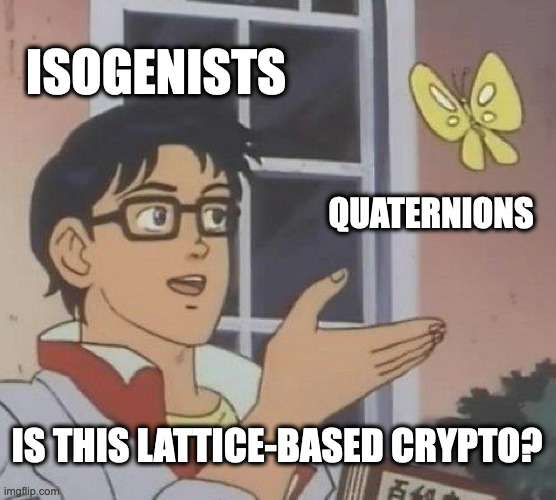

Adjoints
Shipwrecked Lattices - CSIDH on Endomorphism Rings
For KalmarCTF2024, I wrote an isogeny-based cryptography challenge, without a single isogeny or elliptic curve in sight! In the end, the challenge got a single solve by grhkm, who wrote a fantastic CTF-friendly introduction to isogenies and CSIDH (still WIP afaik), culminating with a writeup of this challenge, which I highly recommend checking out.
I will also write a short writeup of this challenge. In this writeup I will assume familiarity with CSIDH - mostly because there already exists plenty of good writeups describing CSIDH to CTF afficionados. If you are not familiar with CSIDH, I recommend checking out some of these writeups before diving into this one!
Acknowledgements
The idea for this challenge is largely based on the paper a paper with Antonin Leroux (eprint.iacr.org/2024/146), so huge thanks to him for a cool project there! Further, thanks for everyone who tried the challenge, with a special shout-out to grhkm who solved it! Finally, thanks to Magnus Ringerud for pointing out a typo in an earlier version of this post.Introduction to the Challenge
In the challenge, we are given given the following code
# ^more stuff above
p = next_prime(2**512)
B = QuaternionAlgebra(-1, -p)
i, j, k = B.gens()
O0 = B.maximal_order()
omega = 820*i + 362*j + 153*k
d = -ZZ(omega**2)
assert is_prime(d)
assert omega in O0
assert (1 + omega)/2 not in O0
O0_oriented = (O0, omega)
ells = [ell for ell in Primes()[:150] if kronecker(-d, ell) == 1]
gens = [ZZ(mod(-d, ell).sqrt()) for ell in ells]
alice_secret = [randint(-3, 3) for _ in range(len(ells))]
bob_secret = [randint(-3, 3) for _ in range(len(ells))]
O_A = GroupAction(O0_oriented, alice_secret, ells, gens)
O_B = GroupAction(O0_oriented, bob_secret, ells, gens)
#...
O_BA = GroupAction(O_B, alice_secret, ells, gens)
O_AB = GroupAction(O_A, bob_secret, ells, gens)
assert invariant(O_BA[0]) == invariant(O_BA[0])
shared_secret = invariant(O_BA[0])
iv, ct = encrypt_flag(shared_secret)
As well as the values $(\mathcal{O}_A, \omega_A), (\mathcal{O}_B, \omega_B)$, and the encrypted flag. This looks like a very Diffie-Hellman like key exchange, and the name "GroupAction" might trigger readers to realise this looks very similar to CSIDH (further hinted by the name of the challenge - which should be attributed to KillerDog). Lets inspect the GroupAction function...
def GroupAction(O_oriented, es_in, ells, gens):
O, omega = O_oriented
es = es_in.copy()
O_i = O
while not all([e == 0 for e in es]):
frak_l = O_i*1
for i in range(len(es)):
if es[i] != 0:
if es[i] > 0:
gen = (gens[i] + omega)
es[i] -= 1
else:
gen = (gens[i] - omega)
es[i] += 1
frak_l = frak_l.intersection(O_i*gen + O_i*ells[i])
O_i = frak_l.right_order()
O_i, beta = reduceHeight(O_i)
omega = beta*omega*beta^(-1)
return O_i, omega
This again looks extremely similar to CSIDH - However, there are two big differences:
- The quadratic order $\mathbb{Z}[\sqrt{-p}]$ is nowhere in sight?
- Where are all the elliptic curves??
In the next two sections, I'll explain both of these differences, to unravel wth is going on here.
1. Primitive Orientations - Generalising CSIDH
Sweeping a whole lot of theory under the rug, there are two ways to view CSIDH: Either, one can think of the fact that we use elliptic curves $E$ with $\mathbb{F}_p$-rational endomorphism ring $$ \mathrm{End}{\mathbb{F}_p}(E) \cong \mathbb{Z}[\sqrt{-p}], $$ which just means that all the $\mathbb{F}_p$-rational endomorphisms of $E$ are of the form $[a] + [b]\pi$, where $\pi$ is an endomorphism satisfying $\pi^2 = [-p]$ ($\pi$ happens to be the $p$-power frobenius endomorphism). However, such curves are supersingular, which implies that their endomorphism rings (over the algebraic clousure $\bar{\mathbb{F}}_p$) are maximal quaternion orders, i.e. $4$-dimensional $\mathbb{Z}$-lattices. Hence we can instead think of CSIDH as using curves for which there exists an embedding $$ \iota : \mathbb{Z}[\sqrt{-p}] \hookrightarrow \mathrm{End}(E). $$ For various reasons we will brush asside for now, this embedding should be primitive, which means that $\iota$ cannot naturally be extended to a superorder of $\mathbb{Z}[\sqrt{-p}]$ in $\mathbb{Q}(\sqrt{-p})$.
Such an embedding is uniquely determined by $\iota(\sqrt{-p})$ - in the CSIDH case, we use $\iota(\sqrt{-p}) = \pi$. The action of an ideal $\mathfrak{a} = (\ell, \sqrt{-p} - \lambda) \subset \mathbb{Z}[\sqrt{-p}]$ in CSIDH is then given by the isogeny with kernel $E[\ell] \cap \ker(\pi - [\lambda])$.
Now, there is "nothing" (okay, that is a lie, but oh well) special about $-p$ here - we can use any other quadratic order, say for simplicity $\mathbb{Z}[\sqrt{-d}]$ for some integer $d$. A curve $E$ together with such an embedding $\iota$ is what is known as a primitively $\mathbb{Z}[\sqrt{-d}]$-oriented curve, and it indeed turns out that we can more or less do CSIDH with any such orientation, by repeating everything we just said using $-d$ instead. As we see in the challenge
omega = 820*i + 362*j + 153*k
d = -ZZ(omega**2)
$\omega$ (= omega) is a very good candidate for describing such a primitive embedding of $\mathbb{Z}[\sqrt{-d}]$ here. We also see that the line
#inside GroupAction
#gen = \omega - \lambda
frak_l = frak_l.intersection(O_i*gen + O_i*ells[i])
is possibly kind of reminiscent of the isogeny defining the group action? This will be the focus of the next section.
2. The Deuring Correspondence and Oriented Orders
The Deuring Correspondence is an extremly powerfool tool, which connects supersingular elliptic curves and isogenies to quaternion orders and ideals, and something which, as put nicely by Benjamin Wesolowski, lies at the heart of contemporary isogeny-based cryptography
. We won't give any details here, but the moral is this:
There is (almost) an exact correspondence between supersingular elliptic curves over $\bar{\mathbb{F}}_p$, and maximal quaternion orders (in a suitable quaternion algebra), and between isogenies and quaternion ideals.Thus it is at least believable that the GroupAction function is more or less the same as what is happening in CSIDH, just on the other side of the Deuring correspondence, namely on the quaternion side.
We now give slightly more details on why this is the same, though it is not too important for the rest of the challenge. Fixing a supersingular elliptic curve $E$ with $\mathrm{End}(E) \cong \mathcal{O}$ for some quaternion order $\mathcal{O}$, we have that an isogeny $\phi : E \rightarrow E'$ corresponds to the quaternion ideal $$I_\phi := \{\alpha \in \mathcal{O} \mid \alpha(P) = \infty, P \in \ker \phi\}.$$ If we now think about a (quadratic!) ideal $\mathfrak{a} = (\sqrt{-d} - \lambda, \ell) \subset \mathbb{Z}[\sqrt{-d}]$, and see how the corresponding isogeny $\phi_\mathfrak{a}$ is defined (see previous section), we can convince ourselves that $\mathcal{O}(\omega - \lambda) + \mathcal{O}\ell$ is indeed the corresponding (quaternion!!) ideal (containment is clear, and for equality we could use that the norm of $I_\phi$ should be equal to $\deg \phi$). Further, given two coprime isogenies $\psi, \psi'$, there is a unique isogeny generated with kernel $\langle \ker \psi, \ker \psi' \rangle$, and it is clear that this corresponds to taking intersection of $I_\psi \cap I_{\psi'}$.
Intermezzo: What about the reduce heigh function?
This function is mainly there to increase efficiency: upon inspeaction
def reduceHeight(O):
B = O.quaternion_algebra()
O0 = B.maximal_order()
I_conn = connectingIdeal(O0, O)
alpha = ReducedBasis(I_conn)[0]
O_reduced = B.quaternion_order([alpha * b * alpha^(-1) for b in O.basis()])
return O_reduced, alpha
we see that it simply conjugates our oriented order (i.e. replaces it by some isomorphic thing). This is there to make sure the denominators of the orders we work with don't grow indeffinately. However, it does also add an extra layer to the challenge as we will see!
Breaking it
So, now that we at least have a rough understanding on what is going on here, it is time to break the challenge! The somehow "fundamental" way to break CSIDH is to solve the vectorization problem - Given two curves $E_1, E_2$ (that are oriented by the same order $\mathbb{Z}[\sqrt{-d}]$), find an quadratic ideal $\mathfrak{a} \subset \mathbb{Z}[\sqrt{-d}]$ such that the class $[\mathfrak{a}] \in cl(\mathbb{Z}[\sqrt{-d}])$ connects $E_1, E_2$, i.e. $[\mathfrak{a}] \star E_1 = E_2$. Thus, a natural approach is again to find such an ideal $[\mathfrak{a}]$, but such that that solves vectorization for our "group action on the orders".
Of course, CSIDH is still secure as far as we know, but a fundamental theme of isogeny-based crypto is that it all breaks when you leak the endomorphism ring. Whether this is also true for CSIDH was first answered (in the affirmative) in eprint.iacr.org/2019/1202 (for other CTFers, by yx7 et al.!), and later generalised in eprint.iacr.org/2021 to arbitrary orientations.
Are these attacks applicable in this challenge? Undoubtedly! We have not only leaked the endomorphism ring, we have done everything on the level of endomorphism rings. However, I never actually tried to implement these attacks, because we can actually solve it in a much simpler way too!
Given two orders $\mathcal{O}, \mathcal{O}'$, finding a quaternion ideal $I$ that "connects them" is easy, where "connects them" means that $O_L(I) = \mathcal{O}$ and $O_R(I) = \mathcal{O}'$ (the function for doing this is even given in the challenge!). The problem is then relating this to a $\mathbb{Z}[\sqrt{-d}]$-ideal. Assume now for simplicity that $\mathcal{O}$ and $\mathcal{O}'$ are oriented "in the same way", i.e. where $\iota(\sqrt{-d})$ is mapped to the same element $\omega$ in both orders. Then, we have a natural candidate for a quadratic ideal, namely we can compute $\mathfrak{a} = I \cap \iota(\mathbb{Q}(\sqrt{-d})) = I \cap \mathrm{span}({1, \omega})$. This $\mathfrak{a}$ can then be given a basis of the form $(N, \omega - \lambda)$ for integers $N, \lambda$. Now, is this the right ideal? Well, if it is, it must satisfy $$ \mathcal{O}N + \mathcal{O}(\omega - \lambda) = I. $$ For general ideal quaternion ideals $I$, we will only have containment in the equality above, however, it turns out that when $\mathcal{O}$ and $\mathcal{O}'$ are oriented "in the same way", we indeed have equality here (see eprint.iacr.org/2024/146 (Lemma 9))!!
Thus the most important part of the solve script are in these 5 lines, which indeed computes $I \cap \iota(\mathbb{Q}(\sqrt{-d}))$...
def restrict(I, omega):
B = I.quaternion_algebra()
M_I = Matrix(QQ, [ai.coefficient_tuple() for ai in I.gens()])
frac_O = (QQ^4).span([ai.coefficient_tuple() for ai in(B(1), omega)], ZZ)
M = I.free_module().intersection(frac_O).basis_matrix()
return [sum(c*g for c,g in zip(ai, B.basis())) for ai in M]
However, there is a small extra hurdle! Indeed, the group action function calls the reduceHeight function repeatedly, which might end up changing the orientation! However, this can be easily fixed. Indeed, given two oriented orders $(\mathcal{O}, \omega), (\mathcal{O}', \omega')$ all we need is an element $\alpha \in B$ to conjugate by so that $$ \omega' = \alpha^{-1}\omega\alpha \Leftrightarrow \alpha\omega' - \omega\alpha = 0, $$ which can be found by solving a simple linear system of equations:
def findIsom(O1, omega1, omega2):
#alpha*omega1 - omega2*alpha = 0
B = O1.quaternion_algebra()
i,j,k = B.gens()
a1, b1, c1, d1 = omega1.coefficient_tuple()
a2, b2, c2, d2 = omega2.coefficient_tuple()
System = [[a1-a2, i**2*(b1-b2), j**2*(c1 - c2), k**2*(d1 - d2)],
[(b1*i - i*b2)/i, (i*a1 - a2*i)/i, (j*k*d1 - k*d2*j)/i, (k*c1*j - c2*j*k)/i],
[(c1*j - c2*j)/j, (i*d1*k - d2*k*i)/j, (c1*j - c2*j)/j, (k*b1*i - b2*i*k)/j],
[(d1*k - d2*k)/k, (i*c1*j - c2*j*i)/k, (j*b1*i - b2*i*j)/k, (k*a1 - a2*k)/k]]
alpha = list(Matrix(QQ, System).right_kernel().basis_matrix())[0]
assert alpha != 0
return sum(c*g for c,g in zip(alpha, B.basis()))
Thus, we have all we need for solving the challenge:
p = next_prime(2**512)
B = QuaternionAlgebra(-1, -p)
i, j, k = B.gens()
O0 = B.maximal_order()
omega = 820*i + 362*j + 153*k
OA = #B.quaternion_order(...)
omega_a = #....
assert omega_a in OA
OB = #B.quaternion_order(...)
omega_b = #....
assert omega_b in OB
#Orientations must "agree", i.e. be induced by the same K \hookrightarrow B orientation
gamma_a = findIsom(OA, omega_a, omega)
gamma_b = findIsom(OB, omega_b, omega)
OA = B.quaternion_order([gamma_a * b * gamma_a^(-1) for b in OA.basis()])
OB = B.quaternion_order([gamma_b * b * gamma_b^(-1) for b in OB.basis()])
assert omega in OA
assert omega in OB
#The connecting ideal is already generated by a quadratic ideal
a = restrict(connectingIdeal(O0, OA), omega)
O_shared = (OB*a[0] + OB*a[1]).right_order()
iv = '363ed27310ef8c97c77badc698586b18'
ct = '833ae0fb36d8e98ae3b287f2adf745e20b9ad0f215bf1b47f1e5cd6b91b6a707d15e9ed227c597bbc80cdc8cf41c275f'
print(decrypt_flag(invariant(O_shared), ct, iv))
And we get the flag kalmar{1s_th1s_l4tt1c3_b4s3d_crypt0?_meme.jpg}
